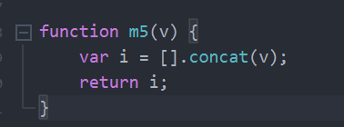

原文出处:本文由博客园博主思思博士提供。
原文连接:https://www.cnblogs.com/guoyansi19900907/p/12064769.html
原文连接:https://www.cnblogs.com/guoyansi19900907/p/12064769.html
我们有时候会向一个方法中传入一个参数，并且对这个参数做一些处理的操作；
但是因为是引用传递，处理过后会对原有的对象造成修改，无法进行反复使用。
如例子：
两次打印的结果一模一样。这样下一个方法在继续使用arr这个数的时候就不是["a","b","c"]这个值了，而是["a","b","c",2];
引用传递在内存中就是引用地址的传递，所以要解决这个问题的唯一思路就是重新产生一个新的对象出来。
下面是我能想到的几个方法。
方法1：针对json
方法2：
方法3：
方法4：使用jquery针对json对象
方法5：针对数组

方法6：针对数组

方法7：针对json